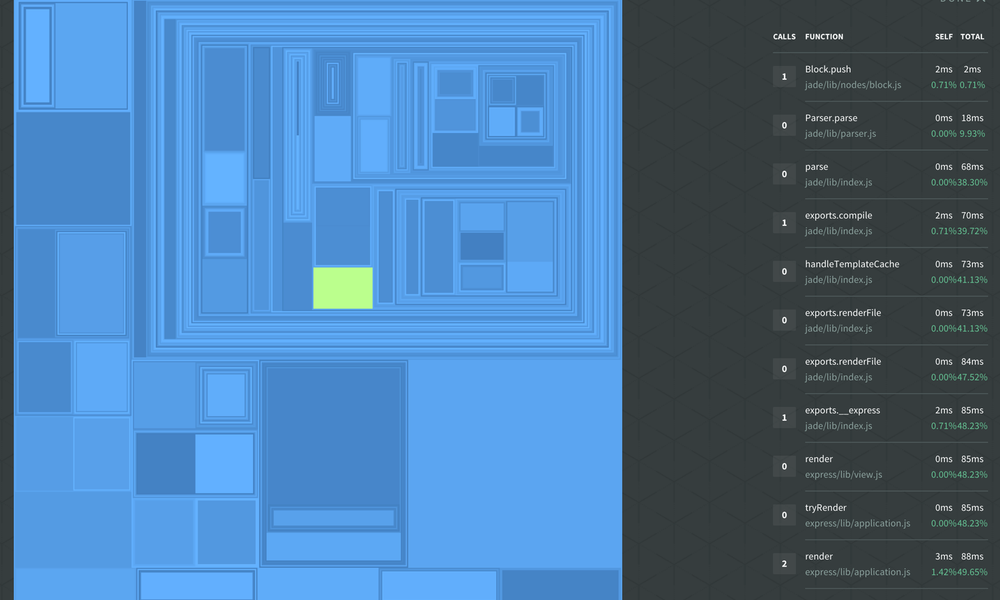

background-image: url(images/Node-Interactive-template-2.png) <div class="toolBar no-print"> <div class="navHelp" title="use the cursor keys to navigate, 'n' to toggle nav buttons, 's' to toggle control panel"> <img class="button-1st" height=16 src="../../glyphicons_free/glyphicons/png/glyphicons_171_fast_backward.png"> <img class="button-prev" height=16 src="../../glyphicons_free/glyphicons/png/glyphicons_172_rewind.png"> <img class="button-next" height=16 src="../../glyphicons_free/glyphicons/png/glyphicons_176_forward.png"> </div> <div> </div> <div class="controlPanel" title="'s' to toggle control panel"> <img class="button-clicker" height=16 src="../../glyphicons_free/glyphicons/png/glyphicons_027_search.png" title="use clicker"> <img class="button-hd" height=16 src="../../glyphicons_free/glyphicons/png/glyphicons_391_video_hd.png" title="toggle HD"> </div> </div> --- # introduction to profiling Node.js applications Patrick Mueller [`@pmuellr`](https://twitter.com/pmuellr), [`muellerware.org`](http://muellerware.org)<br> senior node engineer at [NodeSource](https://nodesource.com)<br> <div class="smaller"><div class="smaller"><div class="smaller"> <a href="http://pmuellr.github.io/slides/2015/12-profiling-node-intro"> http://pmuellr.github.io/slides/2015/12-profiling-node-intro </a> <br> <a href="http://pmuellr.github.io/slides/2015/12-profiling-node-intro/slides.pdf"> http://pmuellr.github.io/slides/2015/12-profiling-node-intro/slides.pdf </a> <br> <a href="http://pmuellr.github.io/slides/"> http://pmuellr.github.io/slides/ </a> (all of Patrick's slides) </div></div></div> <style> .nodevember-logo { padding: 0.2em; background-color: #00936b; } </style> <div class="toolBar no-print"> <div class="navHelp" title="use the cursor keys to navigate, 'n' to toggle nav buttons, 's' to toggle control panel"> <img class="button-1st" height=16 src="../../glyphicons_free/glyphicons/png/glyphicons_171_fast_backward.png"> <img class="button-prev" height=16 src="../../glyphicons_free/glyphicons/png/glyphicons_172_rewind.png"> <img class="button-next" height=16 src="../../glyphicons_free/glyphicons/png/glyphicons_176_forward.png"> </div> <div> </div> <div class="controlPanel" title="'s' to toggle control panel"> <img class="button-clicker" height=16 src="../../glyphicons_free/glyphicons/png/glyphicons_027_search.png" title="use clicker"> <img class="button-hd" height=16 src="../../glyphicons_free/glyphicons/png/glyphicons_391_video_hd.png" title="toggle HD"> </div> </div> --- layout: true <div class="page-context"> <span class="smaller"><span class="smaller"><span class="smaller"> <tt></tt> </span></span></span> </div> <div class="page-icon"> <span class="smaller"><span class="smaller"><span class="smaller"> <tt>profiling Node.js applications</tt> </span></span></span> </div> {{content}} <div class="toolBar no-print"> <div class="navHelp" title="use the cursor keys to navigate, 'n' to toggle nav buttons, 's' to toggle control panel"> <img class="button-1st" height=16 src="../../glyphicons_free/glyphicons/png/glyphicons_171_fast_backward.png"> <img class="button-prev" height=16 src="../../glyphicons_free/glyphicons/png/glyphicons_172_rewind.png"> <img class="button-next" height=16 src="../../glyphicons_free/glyphicons/png/glyphicons_176_forward.png"> </div> <div> </div> <div class="controlPanel" title="'s' to toggle control panel"> <img class="button-clicker" height=16 src="../../glyphicons_free/glyphicons/png/glyphicons_027_search.png" title="use clicker"> <img class="button-hd" height=16 src="../../glyphicons_free/glyphicons/png/glyphicons_391_video_hd.png" title="toggle HD"> </div> </div> --- ## what kind of profiling? * **<u>performance</u>** with V8's CPU profiler * **<u>memory</u>** with V8's heap snapshots --- layout: true <div class="page-context"> <span class="smaller"><span class="smaller"><span class="smaller"> <tt></tt> </span></span></span> </div> <div class="page-icon"> <span class="smaller"><span class="smaller"><span class="smaller"> <tt>profiling Node.js applications</tt> </span></span></span> </div> {{content}} <div class="toolBar no-print"> <div class="navHelp" title="use the cursor keys to navigate, 'n' to toggle nav buttons, 's' to toggle control panel"> <img class="button-1st" height=16 src="../../glyphicons_free/glyphicons/png/glyphicons_171_fast_backward.png"> <img class="button-prev" height=16 src="../../glyphicons_free/glyphicons/png/glyphicons_172_rewind.png"> <img class="button-next" height=16 src="../../glyphicons_free/glyphicons/png/glyphicons_176_forward.png"> </div> <div> </div> <div class="controlPanel" title="'s' to toggle control panel"> <img class="button-clicker" height=16 src="../../glyphicons_free/glyphicons/png/glyphicons_027_search.png" title="use clicker"> <img class="button-hd" height=16 src="../../glyphicons_free/glyphicons/png/glyphicons_391_video_hd.png" title="toggle HD"> </div> </div> --- class: center, middle # profiling performance --- layout: true <div class="page-context"> <span class="smaller"><span class="smaller"><span class="smaller"> <tt>profiling performance</tt> </span></span></span> </div> <div class="page-icon"> <span class="smaller"><span class="smaller"><span class="smaller"> <tt>profiling Node.js applications</tt> </span></span></span> </div> {{content}} <div class="toolBar no-print"> <div class="navHelp" title="use the cursor keys to navigate, 'n' to toggle nav buttons, 's' to toggle control panel"> <img class="button-1st" height=16 src="../../glyphicons_free/glyphicons/png/glyphicons_171_fast_backward.png"> <img class="button-prev" height=16 src="../../glyphicons_free/glyphicons/png/glyphicons_172_rewind.png"> <img class="button-next" height=16 src="../../glyphicons_free/glyphicons/png/glyphicons_176_forward.png"> </div> <div> </div> <div class="controlPanel" title="'s' to toggle control panel"> <img class="button-clicker" height=16 src="../../glyphicons_free/glyphicons/png/glyphicons_027_search.png" title="use clicker"> <img class="button-hd" height=16 src="../../glyphicons_free/glyphicons/png/glyphicons_391_video_hd.png" title="toggle HD"> </div> </div> --- ## what does V8's CPU profiler do? * turn profiler on / off * when on, at regular intervals, V8 will capture current stack trace, with time stamp, and source file / line numbers * when turned off, profiler will aggregate the information, and produce a JSON data structure for analysis tools --- ## time-line showing stack traces <img width="100%" src="images/cpu-profile-cdt-timeline.png"> --- ## table showing functions time <img width="100%" src="images/cpu-profile-cdt-table.png"> --- ## flame graph <img width="100%" src="images/cpu-profile-nsolid-flamegraph.png"> --- ## sunburst <img width="100%" src="images/cpu-profile-nsolid-sunburst.png"> --- ## treemap  --- ## understanding CPU profiling * intro: [Google Developers: Speed Up JavaScript Execution](https://developers.google.com/web/tools/chrome-devtools/profile/rendering-tools/js-execution?hl=en) * **self time** - the time it took to run the function, **not** including any functions that it called * **total time** - the time it took to run the function, including any functions that it called --- ## how can you get CPU profiles? * [npm v8-profiler](https://www.npmjs.com/package/v8-profiler) (requires instrumenting your code) * [npm node-inspector](https://www.npmjs.com/package/node-inspector) * [StrongLoop arc](https://strongloop.com/node-js/devops-tools/) * [NodeSource N|Solid](https://nodesource.com/products/nsolid) --- ## demo time! * using N|Solid - [getting started info](https://nodesource.com/blog/getting-started-with-the-nsolid-console) * see the instructions in [demos/README.md](demos/README.md) * [source for the express-demo](demos/express-demo.js.html) --- layout: true <div class="page-context"> <span class="smaller"><span class="smaller"><span class="smaller"> <tt></tt> </span></span></span> </div> <div class="page-icon"> <span class="smaller"><span class="smaller"><span class="smaller"> <tt>profiling Node.js applications</tt> </span></span></span> </div> {{content}} <div class="toolBar no-print"> <div class="navHelp" title="use the cursor keys to navigate, 'n' to toggle nav buttons, 's' to toggle control panel"> <img class="button-1st" height=16 src="../../glyphicons_free/glyphicons/png/glyphicons_171_fast_backward.png"> <img class="button-prev" height=16 src="../../glyphicons_free/glyphicons/png/glyphicons_172_rewind.png"> <img class="button-next" height=16 src="../../glyphicons_free/glyphicons/png/glyphicons_176_forward.png"> </div> <div> </div> <div class="controlPanel" title="'s' to toggle control panel"> <img class="button-clicker" height=16 src="../../glyphicons_free/glyphicons/png/glyphicons_027_search.png" title="use clicker"> <img class="button-hd" height=16 src="../../glyphicons_free/glyphicons/png/glyphicons_391_video_hd.png" title="toggle HD"> </div> </div> --- class: center, middle # profiling memory --- layout: true <div class="page-context"> <span class="smaller"><span class="smaller"><span class="smaller"> <tt>profiling memory</tt> </span></span></span> </div> <div class="page-icon"> <span class="smaller"><span class="smaller"><span class="smaller"> <tt>profiling Node.js applications</tt> </span></span></span> </div> {{content}} <div class="toolBar no-print"> <div class="navHelp" title="use the cursor keys to navigate, 'n' to toggle nav buttons, 's' to toggle control panel"> <img class="button-1st" height=16 src="../../glyphicons_free/glyphicons/png/glyphicons_171_fast_backward.png"> <img class="button-prev" height=16 src="../../glyphicons_free/glyphicons/png/glyphicons_172_rewind.png"> <img class="button-next" height=16 src="../../glyphicons_free/glyphicons/png/glyphicons_176_forward.png"> </div> <div> </div> <div class="controlPanel" title="'s' to toggle control panel"> <img class="button-clicker" height=16 src="../../glyphicons_free/glyphicons/png/glyphicons_027_search.png" title="use clicker"> <img class="button-hd" height=16 src="../../glyphicons_free/glyphicons/png/glyphicons_391_video_hd.png" title="toggle HD"> </div> </div> --- ## what are V8 heap snapshots? * blah blah --- ## what kind of output can you get? * blah blah --- ## how can you get heap snapshots? * blah blah --- ## demo time! see the instructions in [demos/README.md](demos/README.md) [source for the express-demo](demos/express-demo.js.html) --- layout: true <div class="page-context"> <span class="smaller"><span class="smaller"><span class="smaller"> <tt></tt> </span></span></span> </div> <div class="page-icon"> <span class="smaller"><span class="smaller"><span class="smaller"> <tt>profiling Node.js applications</tt> </span></span></span> </div> {{content}} <div class="toolBar no-print"> <div class="navHelp" title="use the cursor keys to navigate, 'n' to toggle nav buttons, 's' to toggle control panel"> <img class="button-1st" height=16 src="../../glyphicons_free/glyphicons/png/glyphicons_171_fast_backward.png"> <img class="button-prev" height=16 src="../../glyphicons_free/glyphicons/png/glyphicons_172_rewind.png"> <img class="button-next" height=16 src="../../glyphicons_free/glyphicons/png/glyphicons_176_forward.png"> </div> <div> </div> <div class="controlPanel" title="'s' to toggle control panel"> <img class="button-clicker" height=16 src="../../glyphicons_free/glyphicons/png/glyphicons_027_search.png" title="use clicker"> <img class="button-hd" height=16 src="../../glyphicons_free/glyphicons/png/glyphicons_391_video_hd.png" title="toggle HD"> </div> </div> --- class: center, middle # profiling tips --- layout: true <div class="page-context"> <span class="smaller"><span class="smaller"><span class="smaller"> <tt>profiling tips</tt> </span></span></span> </div> <div class="page-icon"> <span class="smaller"><span class="smaller"><span class="smaller"> <tt>profiling Node.js applications</tt> </span></span></span> </div> {{content}} <div class="toolBar no-print"> <div class="navHelp" title="use the cursor keys to navigate, 'n' to toggle nav buttons, 's' to toggle control panel"> <img class="button-1st" height=16 src="../../glyphicons_free/glyphicons/png/glyphicons_171_fast_backward.png"> <img class="button-prev" height=16 src="../../glyphicons_free/glyphicons/png/glyphicons_172_rewind.png"> <img class="button-next" height=16 src="../../glyphicons_free/glyphicons/png/glyphicons_176_forward.png"> </div> <div> </div> <div class="controlPanel" title="'s' to toggle control panel"> <img class="button-clicker" height=16 src="../../glyphicons_free/glyphicons/png/glyphicons_027_search.png" title="use clicker"> <img class="button-hd" height=16 src="../../glyphicons_free/glyphicons/png/glyphicons_391_video_hd.png" title="toggle HD"> </div> </div> --- ## profiling performance * blah blah --- ## profiling memory * blah blah --- layout: true <div class="page-context"> <span class="smaller"><span class="smaller"><span class="smaller"> <tt></tt> </span></span></span> </div> <div class="page-icon"> <span class="smaller"><span class="smaller"><span class="smaller"> <tt>profiling Node.js applications</tt> </span></span></span> </div> {{content}} <div class="toolBar no-print"> <div class="navHelp" title="use the cursor keys to navigate, 'n' to toggle nav buttons, 's' to toggle control panel"> <img class="button-1st" height=16 src="../../glyphicons_free/glyphicons/png/glyphicons_171_fast_backward.png"> <img class="button-prev" height=16 src="../../glyphicons_free/glyphicons/png/glyphicons_172_rewind.png"> <img class="button-next" height=16 src="../../glyphicons_free/glyphicons/png/glyphicons_176_forward.png"> </div> <div> </div> <div class="controlPanel" title="'s' to toggle control panel"> <img class="button-clicker" height=16 src="../../glyphicons_free/glyphicons/png/glyphicons_027_search.png" title="use clicker"> <img class="button-hd" height=16 src="../../glyphicons_free/glyphicons/png/glyphicons_391_video_hd.png" title="toggle HD"> </div> </div> --- class: center, middle # `fin` --- background-image: url(images/Node-Interactive-template-1.png)